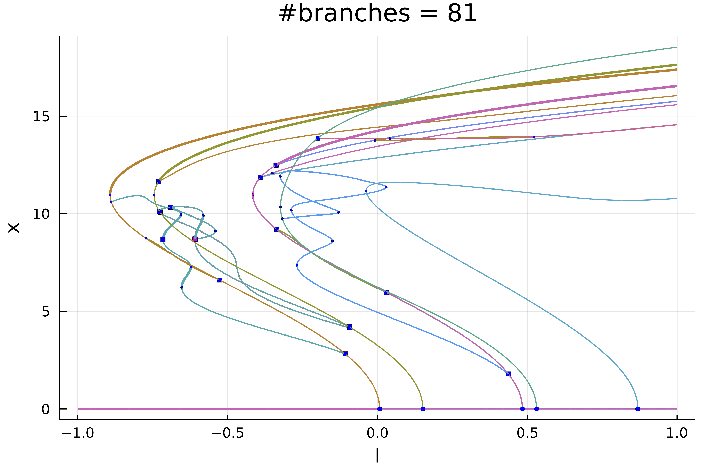
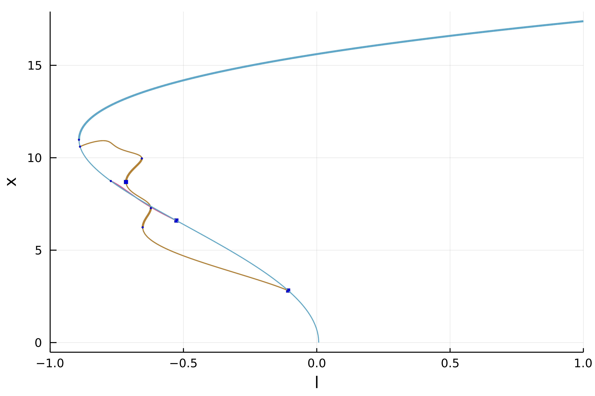

Swift-Hohenberg equation 1d (Automatic)
In this tutorial, we will see how to compute automatically the bifurcation diagram of the 1d Swift-Hohenberg equation
with Dirichlet boundary conditions. We use a Sparse Matrix to express the operator $L_1=(I+\Delta)^2$. We start by loading the packages:
using Revise
using SparseArrays, LinearAlgebra, DiffEqOperators, Setfield, Parameters
using BifurcationKit
using Plots
const BK = BifurcationKitWe then define a discretization of the problem
# define a norm
norminf(x) = norm(x, Inf64)
# discretisation
Nx = 200; Lx = 6.;
X = -Lx .+ 2Lx/Nx*(0:Nx-1) |> collect
hx = X[2]-X[1]
# boundary condition
Q = Dirichlet0BC(hx |> typeof)
Dxx = sparse(CenteredDifference(2, 2, hx, Nx) * Q)[1]
Lsh = -(I + Dxx)^2
# functional of the problem
function R_SH(u, par)
@unpack p, b, L1 = par
out = similar(u)
out .= L1 * u .- p .* u .+ b .* u.^3 - u.^5
end
# Jacobian of the function
Jac_sp = (u, par) -> par.L1 + spdiagm(0 => -par.p .+ 3*par.b .* u.^2 .- 5 .* u.^4)
# second derivative
d2R(u,p,dx1,dx2) = @. p.b * 6u*dx1*dx2 - 5*4u^3*dx1*dx2
# third derivative
d3R(u,p,dx1,dx2,dx3) = @. p.b * 6dx3*dx1*dx2 - 5*4*3u^2*dx1*dx2*dx3
# jet associated with the functional
jet = (R_SH, Jac_sp, d2R, d3R)
# parameters associated with the equation
parSH = (p = 0.7, b = 2., L1 = Lsh)We then choose the parameters for continuation with precise detection of bifurcation points by bisection:
optnew = NewtonPar(verbose = true, tol = 1e-12)
opts = ContinuationPar(dsmin = 0.0001, dsmax = 0.01, ds = -0.01, pMin = -2.1,
newtonOptions = setproperties(optnew; maxIter = 30, tol = 1e-8),
maxSteps = 300, plotEveryStep = 40,
detectBifurcation = 3, nInversion = 4, tolBisectionEigenvalue = 1e-17, dsminBisection = 1e-7)Before we continue, it is useful to define a callback (see continuation) for newton to avoid spurious branch switching. It is not strictly necessary for what follows.
function cb(x,f,J,res,it,itl,optN; kwargs...)
_x = get(kwargs, :z0, nothing)
fromNewton = get(kwargs, :fromNewton, false)
if ~fromNewton
# if the residual is too large or if the parameter jump
# is too big, abord continuation step
return norm(_x.u - x) < 20.5 && abs(_x.p - kwargs[:p]) < 0.05
end
true
endNext, we specify the arguments to be used during continuation, such as plotting function, tangent predictors, callbacks...
args = (verbosity = 3,
plot = true,
linearAlgo = MatrixBLS(),
plotSolution = (x, p;kwargs...)->(plot!(X, x; ylabel="solution", label="", kwargs...)),
callbackN = cb
)Depending on the level of recursion in the bifurcation diagram, we change a bit the options as follows
function optrec(x, p, l; opt = opts)
level = l
if level <= 2
return setproperties(opt; maxSteps = 300, detectBifurcation = 3, nev = Nx, detectLoop = false)
else
return setproperties(opt; maxSteps = 250, detectBifurcation = 3, nev = Nx, detectLoop = true)
end
endThe function optrec modifies the continuation options opts as function of the branching level. It can be used to alter the continuation parameters inside the bifurcation diagram.
We are now in position to compute the bifurcation diagram
# initial condition
sol0 = zeros(Nx)
diagram = @time bifurcationdiagram(jet...,
sol0, (@set parSH.p = 1.), (@lens _.p),
# here we specify a maximum branching level of 4
4, optrec; args...)After ~700s, you can plot the result
plot(diagram; plotfold = false,
markersize = 2, putbifptlegend = false, xlims=(-1,1))
title!("#branches = $(size(diagram))")
Et voilà!
Exploration of the diagram
The bifurcation diagram diagram is stored as tree:
julia> diagram
Bifurcation diagram. Root branch (level 1) has 6 children and is such that:
Branch number of points: 224
Branch of Equilibrium
Bifurcation points:
(ind_ev = index of the bifurcating eigenvalue e.g. `br.eig[idx].eigenvals[ind_ev]`)
- # 1, bp at p ≈ -0.00729225 ∈ (-0.00728880, -0.00729225), |δp|=3e-06, [converged], δ = ( 1, 0), step = 72, eigenelements in eig[ 73], ind_ev = 1
- # 2, bp at p ≈ -0.15169672 ∈ (-0.15158623, -0.15169672), |δp|=1e-04, [converged], δ = ( 1, 0), step = 83, eigenelements in eig[ 84], ind_ev = 2
- # 3, bp at p ≈ -0.48386427 ∈ (-0.48385737, -0.48386427), |δp|=7e-06, [converged], δ = ( 1, 0), step = 107, eigenelements in eig[108], ind_ev = 3
- # 4, bp at p ≈ -0.53115204 ∈ (-0.53071010, -0.53115204), |δp|=4e-04, [converged], δ = ( 1, 0), step = 111, eigenelements in eig[112], ind_ev = 4
- # 5, bp at p ≈ -0.86889220 ∈ (-0.86887839, -0.86889220), |δp|=1e-05, [converged], δ = ( 1, 0), step = 135, eigenelements in eig[136], ind_ev = 5
- # 6, bp at p ≈ -2.07693994 ∈ (-2.07671897, -2.07693994), |δp|=2e-04, [converged], δ = ( 1, 0), step = 221, eigenelements in eig[222], ind_ev = 6We can access the different branches with BK.getBranch(diagram, (1,)). Alternatively, you can plot a specific branch:
plot(diagram; code = (1,), plotfold = false, markersize = 2, putbifptlegend = false, xlims=(-1,1))